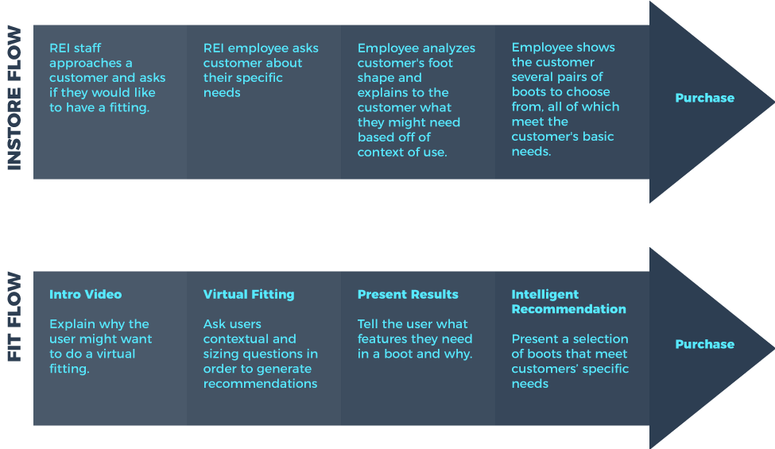
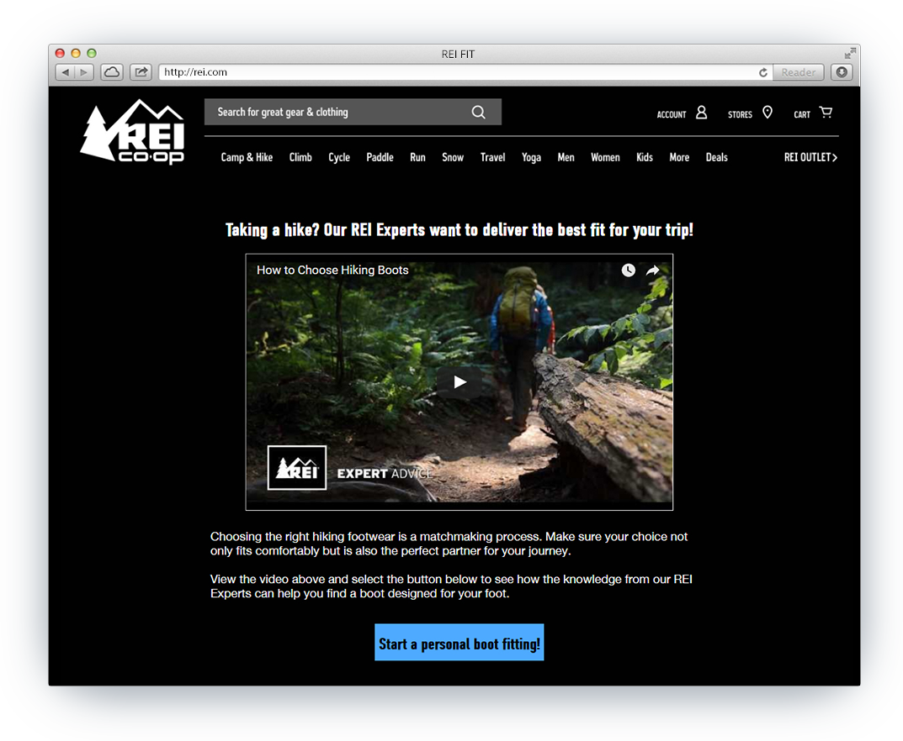
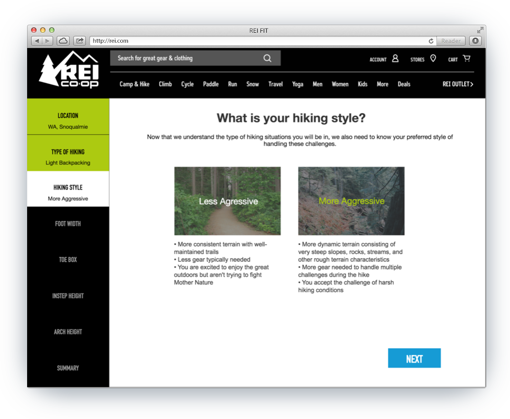
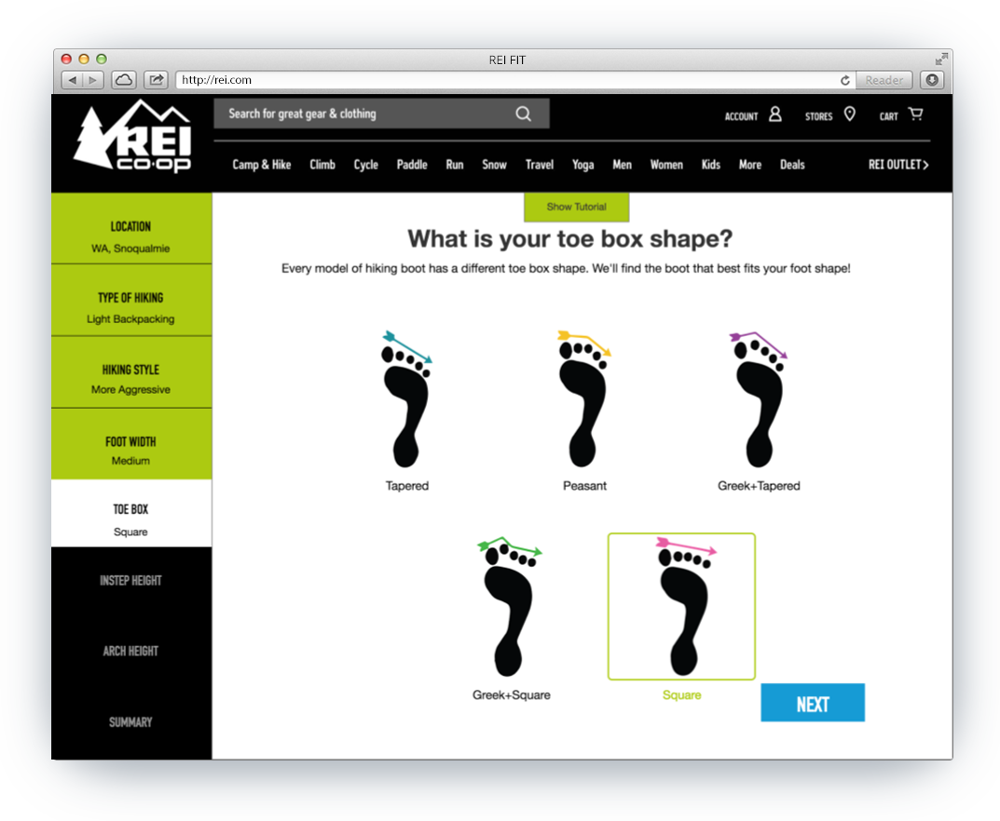
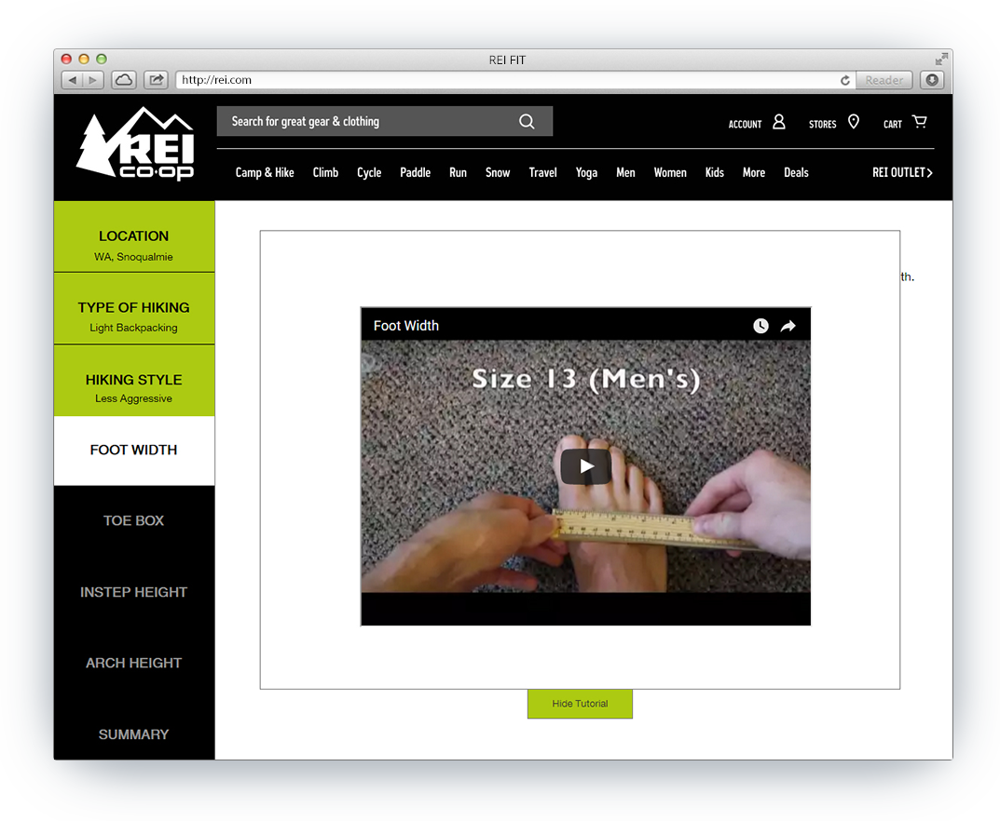
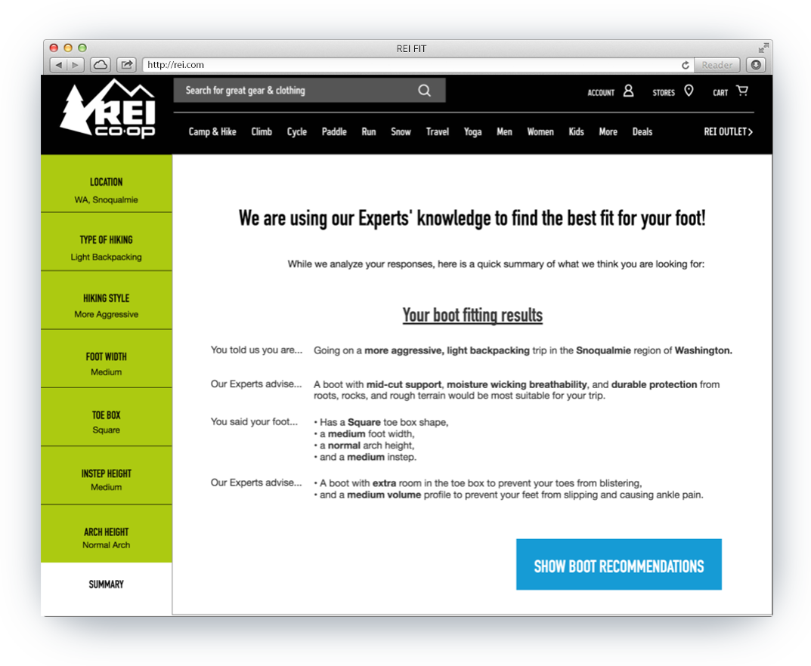
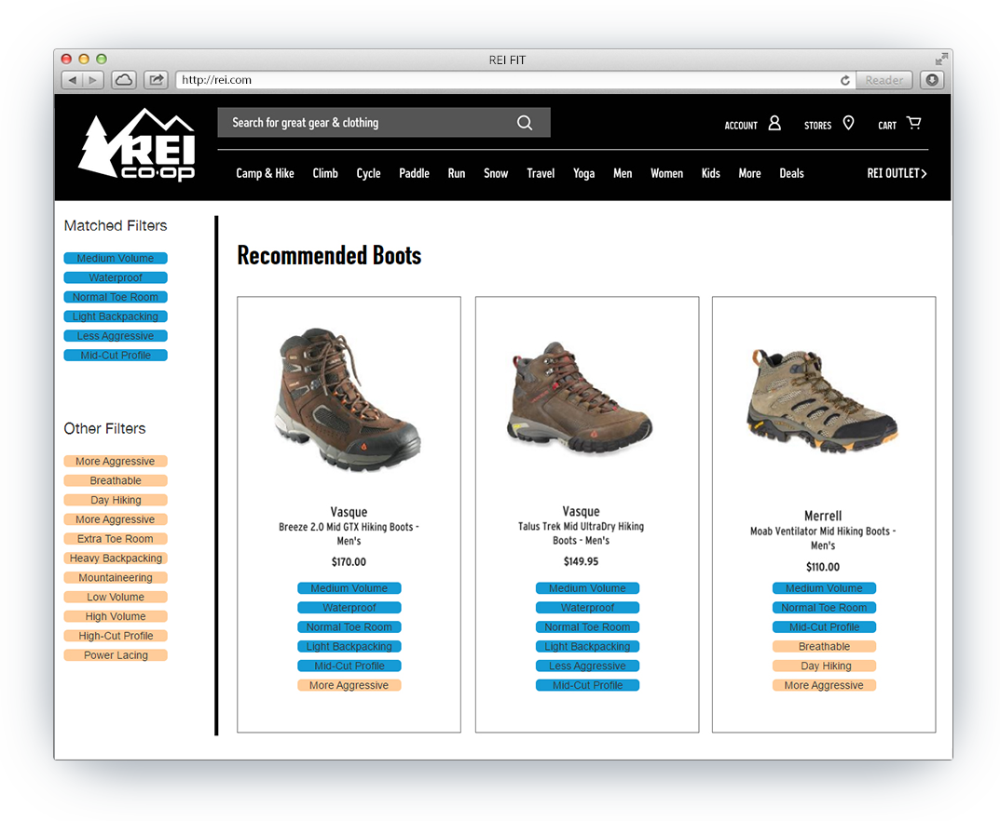
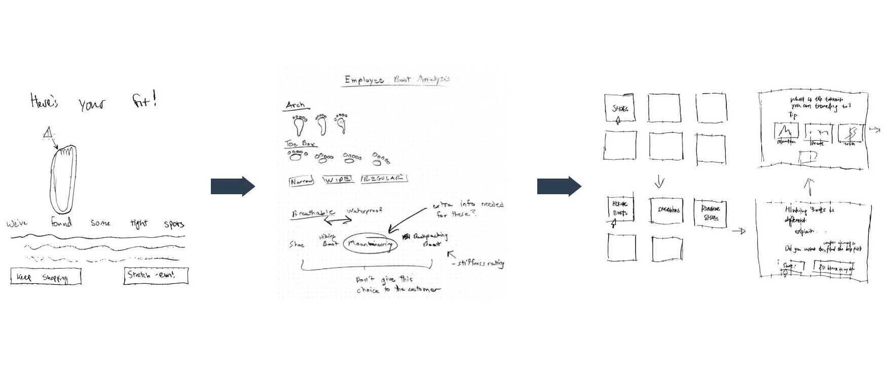
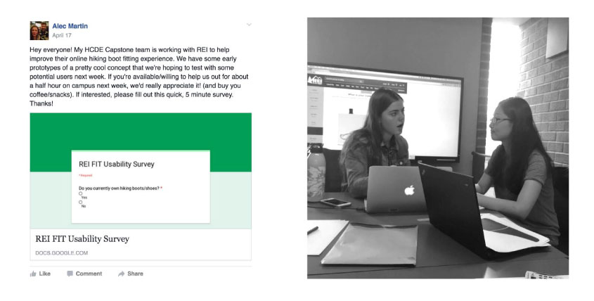
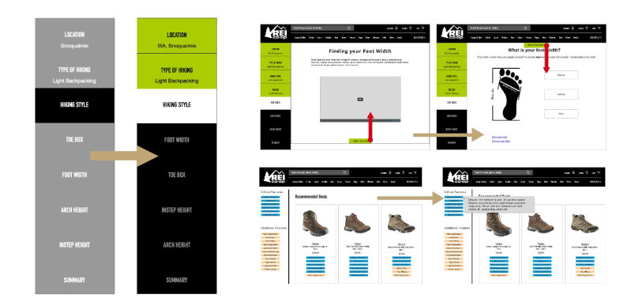

REI FIT
Bring in-Store Boot Fitting Experience to REI.com
My Role
Product Design Intern | Jan. - June 2016
Team
Kirk Lestelle, Alec Martin, Cechi Shi, Xiaochen Yu
What I Did
UX research, User Interface design, Wireframing, Usability testing
How can I determine which pair(s) of boots to purchase, online, to best fit my hiking experiences ?
Challenge
Online shoe shopping experiences currently fail to highlight subtle, yet important differences between shoe models, brands, and types. This problem is further compounded when purchasing a specialty shoe type, such as hiking boots.
With that in mind, REI came to us with a challenge:
How can we handle FIT better?
in terms of using digital platforms to help customers choose hiking boots that fit their hiking experiences.
Design Solution
Through our design process, we found that the complexity of a positive boot fitting experience can be simplified into three critical categories:
Educate User, Personalize Fit, Create Confidence
Our final design of the website contains these three categories by providing an effective customer survey to accurately recommend the best product for their needs.
REI FIT Demo Video
Online Experience Mirrors Offline Experience
{kind=link}
Our Idea is to bring the confidence of an in-store purchase to the online experience. In order to achieve this goal, we designed a hiking boot user flow that mirrors an in-store fitting every step of the way.
REI FIT Landing Page | Educate User
By including a short intro and video stressing the importance of a thorough fitting process, we hope not only to help customers get into the right boots, but to educate them about the nuance associated with hiking boots as well.
{kind=link}
Vitual Fitting Questionaire
The virtual fitting questionnaire is the key component of our proposed solution. Much like an in-store fitting experience, the questions indirectly allow the system to determine which features the customer requires in the right boots for the right hike, with the right features and right fit.
Vitual Fitting Questionaire | Context of Use
The user begins by answering some questions about their intended context of use for the boots. These questions help the system determine what boot type and features the user needs.
{kind=link}
Vitual Fitting Questionaire | Personalized Fit
The user is then asked to answer questions about their foot shape. This helps determine what size and shape boot the user needs. Tutorials are offered to help the user quickly obtain accurate measurements.
{kind=link}
Short Tutorial Videos | Minimize Misconceptions and Previous Experience
We stressed the importance of accurate measurements in the video tutorials, for foot width and instep questions, and encouraged users to measure themselves thoroughly rather than rely on past experience by having short videos (less than 60 seconds) explaining how to take each foot measurement, and why it is important.
{kind=link}
Fitting Results | Create Confidence
By showing users exactly what features or “Tags” are generated from each answer they provide, we hope to show them that each question plays an important role in the selection of the optimal boot. We believe that this will also help instill confidence in the user, by showing that answering these questions is actively helping them get truly personalized recommendations.
{kind=link}
Intelligent Recommendation
Showing 3 different shoe models at a time rather than a single pair, which is how shoes options are usually presented to customers in REI store, we wanted to show that customers still have options rather than force-feeding them the pair.
By comparing the features of the boots in plain english, we are hoping to give the customers all the information they need to make an informed decision, while making it clear that between the three models there is no “wrong” choice, since each model has been handpicked to meet their specific needs.
In addition, customers can add additional features by applying corresponding filters to customize their options. We addressed the boots fitting results from the previous summary page by adding the“mouseover” interaction to show the meanings or original content from the previous fitting result summary page as self-explanatory boot feature tags.
{kind=link}
Design Questions
What aspects of physical fittings for hiking boots can be brought to the digital world?
What can be an effective way to address and present the concept of FIT on REI website?
Milestone I | Initial Research
Method 1: Field Observation and Semi-formal Interviews at REI Flagship Store in Seattle
5 Semi-formal Interviews with REI employees who were knowledgeable about hiking boots.
3 Semi-formal Interviews with REI customers about their former experience in purchasing hiking boots.
8 Semi-formal Interviews with individuals who recently purchased hiking boots from an online retailer.
Method 2: Competitive Analysis via Online Researching
We also researched online about existing digital platforms used in the field of fitting.
Findings
Hiking boots have several unique challenges when it comes to fitting. Many of these challenges have nothing to do with the size of the boots, and require a certain level of expertise to navigate.
REI has created an in-store experience that generates trust and loyalty in their customers, especially REI members, by having resources aimed at helping customers navigate the fitting challenge. The experience includes expert employees and free in-store alteration services.
there are no existing digital platforms currently have a fitting experience that addresses any issues beyond the size of the hiking boots. Brooks and Mizuno are running shoe companies that have implemented personal fitting systems into their online experience to help customers self-analyze several characteristics that affect which running shoe fits them best. This is not surprising since manufacturers typically produce more rigorous data for running shoe characteristics than in hiking shoes.
Milestone II | Ideation
Method 1: 3 Rounds of Sketching to System Mapping
From an extremely diverse pool of possible solutions to high-level design spec, we ran 3 rounds of individual sketching and group critique sessions.
Using our high-level design spec, we created a system map to describe the general flow a user would go through when interacting with our system. This was the first step in taking our project from a concept to a real, usable system.
Method 2: System Mapping to Annotated Wireframing
Working step by step through the system map, we designed screens and features as a group in a single, 4 hour whiteboarding session. These whiteboard sketches were then recreated as wireframes on paper and digitally annotated to describe the behavior of elements. These wireframes served as the initial version of our complete system.

Method 3: Annotated Wireframing to Initial Prototype
Based off the system map and the final sketches we developed during the ideation phase, our team adopted Axure RP 8 to create an interactive prototype in order to test our concept with potential users.
We created medium-fidelity Axure prototype with limited interactivity, deployed to Axure server.
Initial Prototype
Milestone III | Concept Testing
Participants Recruitment
To recruit participants, we distributed a short questionnaire on several UW hiking club Facebook pages.
From that screener questionnaire, we scheduled 5 half-hour sessions. Unfortunately, only 3 participants showed up. To make up for this, we conducted two sessions with participants known personally to our team, who have experience with hiking and purchasing hiking boots.
{kind=link}
Test Sessions
During test sessions, we used Lookback.io to record on-screen interactions as well as conversation. These recordings were used to take notes on study sessions after the sessions had ended. The documentation we used during our usability test sessions includes the general script, the use case scenario, the consent form, and a post-test questionnaire.
5 Affinity Diagramming Themes & Design Recommendations

Theme 1: Stigma Against Buying Online
4 out of 5 participants mentioned that information on current websites didn’t provide enough information to make them confident in a boot purchase.
Design Recommendation | Be thorough and transparent with users at each step of the process, so that they know exactly what is being recommended and why.
Theme 2: Instep Confusion
4 out of 5 participants were not familiar with their instep height and weren’t able to determine it effectively using the graphics we provided.
Design Recommendation | Find a more effective way to explain what instep height is, why it is important, and provide a way to objectively measure it.
Theme 3: System Feedback
All 5 participants thought the system might be malfunctioning because they were not able to see that the system registered their answer inputs (clicks).
Design Recommendation | Add some sort of system feedback to ensure the user that their input has been received. One option would be to make the “Next” button grayed out and disabled until the user makes a selection.
Theme 4: Misconceptions and Previous Experience
Multiple participants were able to answer our more complex questions quickly because they “knew” the information being asked from prior fittings. The accuracy of this knowledge, however, is uncertain.
Design Recommendation | We will stress the importance of accurate measurements, and encourage users to measure themselves thoroughly rather than rely on past experience.
Theme 5: Tag Confusion
2 out of 5 participants had trouble understanding some tags we presented on our boots recommendation page and doubted the connections between the contents on the questionnaire result page and the tags.
Design Recommendation | Address the boots fitting results from the previous summary page as references to show more connections between the their answers and the tags.
Milestone IV | Design Interation
Final PrototypeFidelity Increase
For version 2 of our interactive prototype, we wanted to make the system look and feel more like it belongs on REI.com. In order to accomplish this, we tweaked our color schemes, button shape and layout, highlighting, and animation to better match what REI.com currently looks like.
Prototype Refinement
Utilizing Axure’s team project functionality, we remotely made changes to our prototype until it fully reflected the functional changes outlined in our changelog.
Interactive prototype that reflects the changes proposed in response to our Usability Study findings.

Milestone V | Usability Testing
Participants Recruitment
To recruit participants, we distributed the same short questionnaire on several UW hiking club Facebook pages.
From that screener questionnaire, we scheduled five 30 - 40 minutes sessions. Unfortunately, one participant didn’t show up. To make up for this, we conducted one session with a participant known personally to our team, who has experience with hiking and purchasing hiking boots.
Test Sessions
During test sessions, we used Lookback.io to record on-screen interactions as well as conversation. These recordings were used to take notes on study sessions after the sessions had ended. The documentation we used during our usability test sessions includes the general script, the use case scenario, the consent form, and a post-test questionnaire.
6 Affinity Diagramming Themes & Design Recommendations

Theme 1: Eagerness
Participants were really eager to get right to it and perform the measurements on their feet. This lead to users making incorrect measurements, and, in some cases, measuring the wrong part of their foot.
Design Recommendation | Be thorough and transparent with users at each step of the process, so that they know exactly what is being recommended and why.
Theme 2: Prior Experience
Many participants tried to use their previous experience with shoe fitting in order to quickly select an option on the foot measurement questions.
Design Recommendation | Find a more effective way to explain what instep height is, why it is important, and provide a way to objectively measure it.
Theme 3: Transparency in Answers Affecting Results
Multiple participants wished they could easily learn how each selection during the questionnaire was affecting their results and boot recommendations.
Design Recommendation | Add some sort of system feedback to ensure the user that their input has been received. One option would be to make the “Next” button grayed out and disabled until the user makes a selection.
Theme 4: Precision
Participants preferred having actual ranges of measurements for them to choose from. They also reported that more precise descriptions of the concepts and terminologies would be helpful.
Design Recommendation | We will stress the importance of accurate measurements, and encourage users to measure themselves thoroughly rather than rely on past experience.
Theme 5: Summary Page Clarity
Participants appreciated the final page of the questionnaire that displayed both the answers they gave and the Expert recommendations that came from those answers. However, they still believed that the information could have been displayed better.
Design Recommendation | Address the boots fitting results from the previous summary page as references to show more connections between the their answers and the tags.
Theme 6: Tutorial Button
None of our 5 participants noticed the “Show Tutorial” button at the top of each question screen.
Design Recommendation | Address the boots fitting results from the previous summary page as references to show more connections between the their answers and the tags.
Lessions Gained
Conduct more sessions for usability testing
Recruiting participants is hard, especially on a tight timeline. With that being said, we really would have liked to have the opportunity to test with just a couple more participants for each test phase. While we were able to get extremely valuable information from the participants we worked with, we didn’t quite feel like we were able to reach full saturation.
Record the process - take pictures, take notes on every meeting
We learned quickly that there is no such thing as too much documentation. If we were to start from the beginning, we would take a lot more pictures, notes, screenshots, etc. in order to help us more clearly communicate our ideas, process, findings, and progress to our peers, users, and sponsor.
It’s always good to start early, as we did
Moving Forward with FIT
REI Expert Knowledge Database
In order to build the database containing all of the appropriate information for each hiking boot, we believe that REI Experts at multiple REI locations could record the contextual and foot characteristics that are unique to each boot.
Customer Profile Recommendations
REI customer engagement could be improved with this fitting survey by saving their answers into a customer profile that can be used to easily recommend future boot purchases or other products.
FIT Experience in Other Products
Online purchasing experiences for other products (e.g. bikes, running shoes, ski boots) could also implement their own fitting survey to give accurate recommendations to online shoppers.
Team FIT